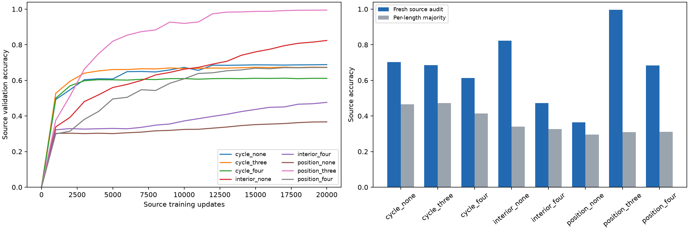
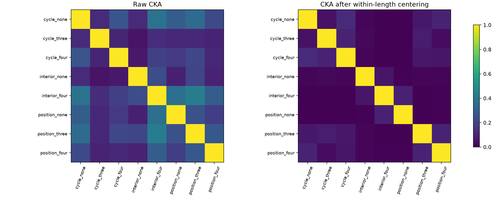
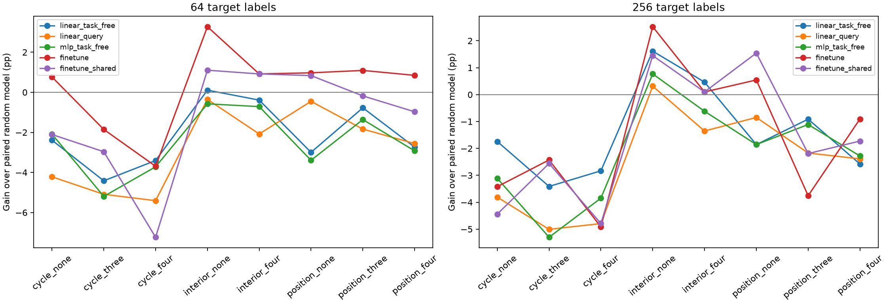
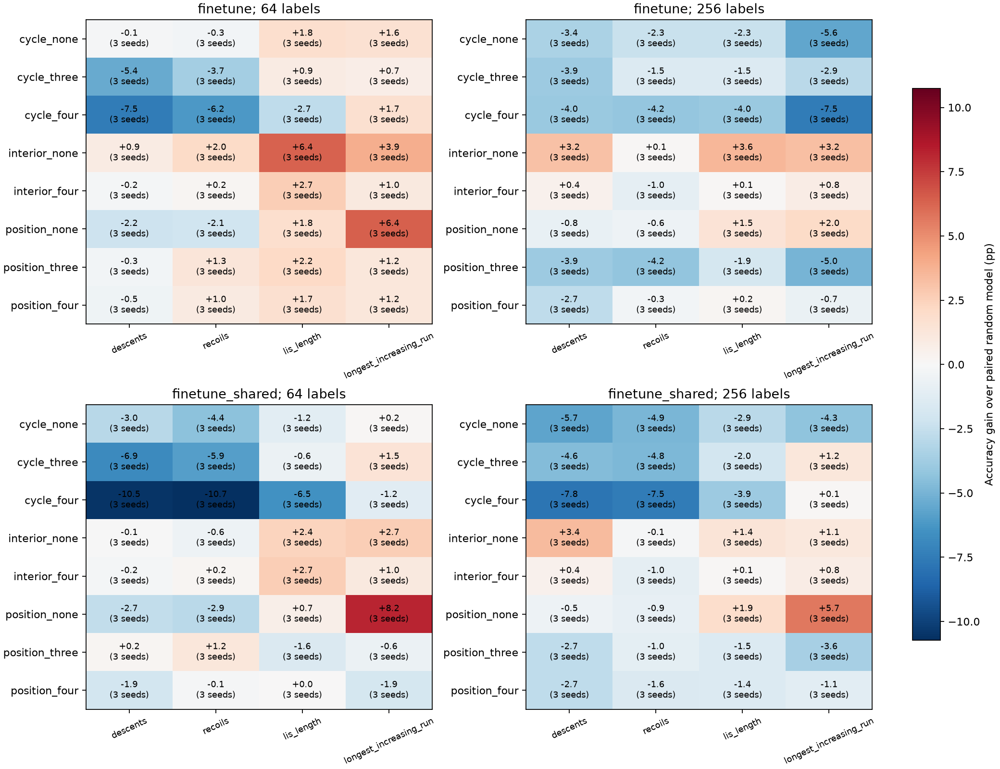

研究时段 2026-10-05T11:51:45+00:00 至 2026-10-05T17:51:45+00:00；本报告更新于 2026-10-05T17:51:47.302181+00:00。已完成源组合模型 24/24，单任务模型 24/54，目标测试模型 27/27，共 1080 个测试端点。未完成条件不进入配对收益均值。
时间分配状态：scheduled_phases_finished；可选源对照的交接起点为 2026-10-05T15:21:45+00:00，先完成当前模型，再进入未改变的目标验证网格。执行状态；交接时记录的协议修订。
目标验证与测试全部完成后，剩余训练时间按原先任务和种子顺序补充单任务对照。当前状态 time_limited；执行记录。源参数、曝光和目标选参规则均未改变。
独立目标抽样复核的执行状态为 repeat_completed_source_resumed：先补齐种子 17 的 18 个单任务对照，再临时交接 GPU，完成后继续原可选源对照；时间分配记录。
六小时研究窗口已结束；最终完成记录列出实际完成与时间限制下未完成的条件。
仅按三个预先选定组合的源验证成绩，在三种架构中选出 256 维、4 层因果 Transformer。使用原仓库性质函数和模型类；等价 SDPA 注意力加速经过数值与因果检查。所有本轮条件使用相同 BF16 训练、FP32 评估协议。
| 组合 | 已证明约束的最小任务数 | 源任务 |
|---|---|---|
| cycle_none | 无已证明线性约束 | exceedances, cycle_count, three_cycle_count, odd_cycle_count |
| cycle_three | 3 | fixed_points, cycle_count, nontrivial_cycle_count, components |
| cycle_four | 4 | fixed_points, even_cycle_count, odd_cycle_count, nontrivial_cycle_count |
| interior_none | 无已证明线性约束 | peaks, valleys, left_to_right_maxima, right_to_left_maxima |
| interior_four | 4 | peaks, valleys, double_ascents, double_descents |
| position_none | 无已证明线性约束 | double_ascents, double_descents, successions, adjacencies |
| position_three | 3 | fixed_points, exceedances, deficiencies, right_to_left_minima |
| position_four | 4 | exceedances, deficiencies, cycle_count, nontrivial_cycle_count |
所有四任务模型固定 20,000 更新，每任务每步 32 输入，曝光 640,000 次；所有种子与条件共享输入采样计划。记录 5k、10k、20k 表征，不为某组单独选择最好测试检查点。单任务对照保持同初始化、每任务曝光、更新数与学习率计划，但每次更新只优化一个任务，其梯度目标与四任务平均损失不同。

| 组合 | 已完成种子 | 源训练 | 新输入源审计 | 按长度多数类 |
|---|---|---|---|---|
| cycle_none | 3/3 | 71.09% | 70.35% | 46.50% |
| cycle_three | 3/3 | 68.97% | 68.54% | 47.23% |
| cycle_four | 3/3 | 62.24% | 61.27% | 41.49% |
| interior_none | 3/3 | 83.70% | 82.28% | 33.96% |
| interior_four | 3/3 | 49.38% | 47.22% | 32.62% |
| position_none | 3/3 | 37.80% | 36.38% | 29.60% |
| position_three | 3/3 | 99.81% | 99.61% | 30.92% |
| position_four | 3/3 | 68.50% | 68.31% | 31.17% |
源审计输入既未用于源训练，也未用于架构选择。逐任务和逐长度基线见 源端点；已完成单任务与多任务的同种子差值见 单任务对照。当部分性质没有充分学会时，表征差异不能证明网络已经形成完整代数结构。
每行只平均完整且同种子的配对，已完成种子数不同。两训练条件的每任务曝光相同，但单任务损失与四任务平均损失的梯度目标不同。
| 组合 | 性质 | 完整配对种子 | 多任务 | 单任务 | 多任务减单任务 |
|---|---|---|---|---|---|
| cycle_four | even_cycle_count | 1/3 | 37.57% | 36.38% | +1.19 pp |
| cycle_four | fixed_points | 1/3 | 99.52% | 99.76% | -0.24 pp |
| cycle_four | nontrivial_cycle_count | 1/3 | 37.81% | 37.57% | +0.24 pp |
| cycle_four | odd_cycle_count | 1/3 | 70.48% | 69.57% | +0.90 pp |
| cycle_none | cycle_count | 1/3 | 37.81% | 35.90% | +1.90 pp |
| cycle_none | exceedances | 1/3 | 99.86% | 99.90% | -0.05 pp |
| cycle_none | odd_cycle_count | 1/3 | 70.67% | 69.57% | +1.10 pp |
| cycle_none | three_cycle_count | 1/3 | 74.38% | 74.14% | +0.24 pp |
| cycle_three | components | 1/3 | 99.24% | 99.67% | -0.43 pp |
| cycle_three | cycle_count | 1/3 | 37.95% | 35.90% | +2.05 pp |
| cycle_three | fixed_points | 1/3 | 99.29% | 99.76% | -0.48 pp |
| cycle_three | nontrivial_cycle_count | 1/3 | 37.81% | 37.57% | +0.24 pp |
| interior_four | double_ascents | 2/3 | 35.02% | 99.55% | -64.52 pp |
| interior_four | double_descents | 2/3 | 35.40% | 88.93% | -53.52 pp |
| interior_four | peaks | 2/3 | 56.69% | 78.26% | -21.57 pp |
| interior_four | valleys | 2/3 | 56.21% | 79.33% | -23.12 pp |
| interior_none | left_to_right_maxima | 1/3 | 96.71% | 99.95% | -3.24 pp |
| interior_none | peaks | 2/3 | 57.69% | 78.26% | -20.57 pp |
| interior_none | right_to_left_maxima | 1/3 | 85.86% | 94.81% | -8.95 pp |
| interior_none | valleys | 2/3 | 56.52% | 79.33% | -22.81 pp |
| position_four | cycle_count | 1/3 | 36.76% | 35.90% | +0.86 pp |
| position_four | deficiencies | 1/3 | 98.86% | 99.86% | -1.00 pp |
| position_four | exceedances | 1/3 | 99.14% | 99.90% | -0.76 pp |
| position_four | nontrivial_cycle_count | 1/3 | 38.24% | 37.57% | +0.67 pp |
| position_none | adjacencies | 2/3 | 33.86% | 30.76% | +3.10 pp |
| position_none | double_ascents | 2/3 | 33.14% | 99.55% | -66.40 pp |
| position_none | double_descents | 2/3 | 35.26% | 88.93% | -53.67 pp |
| position_none | successions | 2/3 | 48.07% | 43.26% | +4.81 pp |
| position_three | deficiencies | 1/3 | 99.76% | 99.86% | -0.10 pp |
| position_three | exceedances | 1/3 | 99.81% | 99.90% | -0.10 pp |
| position_three | fixed_points | 1/3 | 99.90% | 99.76% | +0.14 pp |
| position_three | right_to_left_minima | 1/3 | 98.81% | 99.57% | -0.76 pp |

CKA 使用同一组 840 个未训练的任务无关前缀，在 ONE_END 位置测量。并列报告原始 CKA 和逐长度减均值后的 CKA，以及三种子一致性和中间检查点。原论文“正确数学变换提高最终层 CKA”的 24/24 核对结果是另一项固定模型、改变输入对齐的实验，不能由这里的组合比较替代或否定。
四个共同目标为 descents, recoils, lis_length, longest_increasing_run，全部未参与源训练。新数据包括源训练 42,000、源验证 2,100、表征 840、支持池 2,100、目标验证 1,050、目标测试 2,100、源审计 2,100 个排列，七组全局互不重复；长度均为 10–30。支持预算 64、256 嵌套，所有条件相同，按输入均匀采样。
目标参数状态：complete。验证网格已经记录 1944 个结果；只有完成全部验证搜索后才进入测试。 每个源条件和随机条件使用相同大小的验证网格，以种子 17 的四目标、两预算平均验证成绩选学习率与更新数，然后应用于所有三个种子。冻结读出特征的标准化只使用支持集。任务无关线性、MLP 与任务查询线性读出分别验证选参。全模型微调同时报告各条件选参和统一随机条件策略，帮助区分不同训练预算的影响。

| 组合 | 读出 | 256 标签测试 | 对配对随机模型收益 | 完整配对端点 |
|---|---|---|---|---|
| cycle_four | finetune | 27.35% | -4.92 pp | 12/12 |
| cycle_four | finetune_shared | 27.48% | -4.79 pp | 12/12 |
| cycle_four | linear_query | 25.19% | -4.79 pp | 12/12 |
| cycle_four | linear_task_free | 26.61% | -2.83 pp | 12/12 |
| cycle_four | mlp_task_free | 25.94% | -3.85 pp | 12/12 |
| cycle_none | finetune | 28.85% | -3.42 pp | 12/12 |
| cycle_none | finetune_shared | 27.83% | -4.44 pp | 12/12 |
| cycle_none | linear_query | 26.17% | -3.81 pp | 12/12 |
| cycle_none | linear_task_free | 27.70% | -1.74 pp | 12/12 |
| cycle_none | mlp_task_free | 26.68% | -3.11 pp | 12/12 |
| cycle_three | finetune | 29.84% | -2.43 pp | 12/12 |
| cycle_three | finetune_shared | 29.71% | -2.56 pp | 12/12 |
| cycle_three | linear_query | 24.98% | -5.01 pp | 12/12 |
| cycle_three | linear_task_free | 26.03% | -3.41 pp | 12/12 |
| cycle_three | mlp_task_free | 24.49% | -5.30 pp | 12/12 |
| interior_four | finetune | 32.37% | +0.10 pp | 12/12 |
| interior_four | finetune_shared | 32.37% | +0.10 pp | 12/12 |
| interior_four | linear_query | 28.63% | -1.35 pp | 12/12 |
| interior_four | linear_task_free | 29.91% | +0.46 pp | 12/12 |
| interior_four | mlp_task_free | 29.17% | -0.62 pp | 12/12 |
| interior_none | finetune | 34.79% | +2.52 pp | 12/12 |
| interior_none | finetune_shared | 33.71% | +1.45 pp | 12/12 |
| interior_none | linear_query | 30.30% | +0.31 pp | 12/12 |
| interior_none | linear_task_free | 31.06% | +1.62 pp | 12/12 |
| interior_none | mlp_task_free | 30.56% | +0.77 pp | 12/12 |
| position_four | finetune | 31.36% | -0.90 pp | 12/12 |
| position_four | finetune_shared | 30.54% | -1.73 pp | 12/12 |
| position_four | linear_query | 27.60% | -2.39 pp | 12/12 |
| position_four | linear_task_free | 26.87% | -2.58 pp | 12/12 |
| position_four | mlp_task_free | 27.51% | -2.28 pp | 12/12 |
| position_none | finetune | 32.81% | +0.54 pp | 12/12 |
| position_none | finetune_shared | 33.81% | +1.54 pp | 12/12 |
| position_none | linear_query | 29.13% | -0.85 pp | 12/12 |
| position_none | linear_task_free | 27.59% | -1.86 pp | 12/12 |
| position_none | mlp_task_free | 27.93% | -1.86 pp | 12/12 |
| position_three | finetune | 28.51% | -3.76 pp | 12/12 |
| position_three | finetune_shared | 30.08% | -2.19 pp | 12/12 |
| position_three | linear_query | 27.81% | -2.17 pp | 12/12 |
| position_three | linear_task_free | 28.53% | -0.91 pp | 12/12 |
| position_three | mlp_task_free | 28.68% | -1.11 pp | 12/12 |
追加的仅长度、仅支持标签基线在验证集选统一平滑带宽，64/256 标签平均测试准确率为 31.02%/33.74%。它是在部分原生测试之后加入的对照，三个初始化之间完全相同；对随机模型略有收益，不代表超过了这个简单基线。

数字是同目标、同种子配对差值；每格标明已完成种子数。全部五种读出的逐目标结果均保留。
相同模型与输入，逐长度去均值后的跨种子 CKA 在 ONE_END 位置有 0/24 个配对上升，在四个源任务查询的拼接中有 19/24 个配对上升。这是初步结果后追加的提取位置诊断；查询拼接只比较相同源任务集，三个种子的三个配对不是独立重复。
有限域的所有源组合都有四个任务、秩四、均匀边际、零两两互信息及完全相同的均匀联合输出分布。独立复核进一步匹配单个源函数的物理系数支撑大小。精确答案核的三层排序不保证隐藏层排序，下面保留原登记检验的全部设置。
| 实验 | 完成模型 | 源学习门槛 | 满足隐藏排序的配对设置 |
|---|---|---|---|
| field_symmetry | 45/45 | 45/45 | 3/9 |
| field_matched_support | 27/27 | 27/27 | 4/9 |
精确答案核的代数推导解释了 1、0.75、0.5：在完整均匀有限域上，类别答案核的 CKA 由任务射影方向的重合决定。该恒等式经五个本轮集合与 90 个额外枚举检查；它不是隐藏层定理。各源任务集在变换下都线性闭合，区别是单任务方向保持程度。
独立输入基的 6480 条预测于 2026-10-05T14:39:02.054311+00:00 保存，早于独立目标读出。当前核对 6480 条，五个规则全部保留。下面比较基线与增加最小源答案组合阶数；linear/MLP 的预测目标是配对随机调整后的迁移收益，类别查表的目标是其准确率。三个源公式已在拟合集中出现，新的是输入基与模型运行。
| 读出 | 标签 | 独立基：基线 R² | 增加组合阶数 R² | ΔR² |
|---|---|---|---|---|
| linear | 25 | -0.217 | -0.248 | -0.031 |
| linear | 50 | -0.001 | -0.026 | -0.025 |
| mlp | 25 | 0.020 | -0.030 | -0.050 |
| mlp | 50 | 0.146 | 0.087 | -0.059 |
| categorical_subset | 25 | 0.438 | 0.786 | +0.347 |
| categorical_subset | 50 | 0.287 | 0.914 | +0.626 |
全部五种预测与冻结证据 · 原有限域行为 · 独立复核行为。类别查表和已知目标公式的分析诊断有额外结构假设，不能用其成功替代普通神经迁移。
源读出子空间与尺度诊断是在隐藏排序失败后追加的事后分析。对 72 个模型，保持源输出不变的八种正尺度变换，使同一模型原始 CKA 的最大减最小平均达到 0.174。在不触及标准差下限时，支持集逐维标准化会抵消这些尺度变换；因此原始 CKA 变化不必对应读出能力变化。
源输出关系诊断将数学一致性、答案正确率与长度多数类预测分开，避免将满足关系的错误答案当作学会任务。
此前编码器的状态留出诊断保留了目标依赖阶数与查表覆盖的区别；源预训练见过全部输入，仍属于新任务标签的转导实验。
固定的通用因子交互核读出是在普通神经结果之后追加的事后探索：四个核阶数与训练源头、初始源头、直接物理输入因子三个表示全部保留。额外的交互假设类及其条件性收益不能代替原神经迁移结论。
八个新目标的冻结预测复核沿用独立基的 27 个编码器与旧预测权重。目标仅按数学条件选取，使其在三个物理输入基中均依赖至少三个坐标；这一条件是在发现旧目标含容易的单坐标函数后追加，原负结果全部保留。普通神经平均收益约 0.04–1.10 个百分点，但准确率仍低于 20% 机会水平；组合阶数对类别查表的预测更稳定，对神经收益没有一致改善。新目标预测先于其读出结果保存。
全部层的前缀 CKA 与实际激活梯度是在位置差异之后追加的事后检查。答案损失对末层前缀输出的激活导数为零，而前一层前缀通过查询注意力参与损失。共享参数仍被训练，不能将零激活导数解释为前缀未训练。报告全部层，没有据此改动原源训练或目标策略。
原生数值答案区分子空间将 0–30 数值类别的输出权重行空间与其正交补分开。去长度的源查询拼接 CKA 在数值区分空间上升 23/24，正交补上升 16/24；训练源查询约 87.5% 的方差位于该数值空间。两空间只保证这些数值类别之间的 logit 差值分解，不保证其他词表概率或将来任务行为不变，不能把正交补称为无用。
整组合留出的迁移收益预测比较学习程度与标签相似性基线、增加数学关系、增加测得几何以及同时增加两者。规则和代码在本轮测试之前固定，所有五种读出和两种预算全部报告。该分析是在先导结果之后追加，只有八个任务组合及一个输入世界，不能称为独立前瞻复制。
冻结预测实现中的无约束单独指示变量因空值标记检查而恒为零，最小阶数 3/4/5 仍正确。错误在部分测试之后、预测拟合之前发现；修正版敏感性分析与原版全部并列，未按得分选择版本。
独立目标支持集与测试集复核使用原 24 个源编码器、冻结读出策略、相同源任务集和目标，新增 5,250 个全局互不重复的输入。新的只是目标抽样，不能称为新源世界或新任务组合复制。全部原预测器与两个指示变量修正版共 5,760 条预测在新标签生成前保存，所有版本均保留。
两轮逐组合、逐目标对照各包含 1,080 个测试端点。256 标签条件选参微调中，interior_none 对随机初始化的平均收益为 +2.52/+2.47 个百分点；正种子均值为 3/3 与 2/3。第二轮准确率 33.85% 仍低于仅用长度的参照 1.71 个百分点。全部八组合、五读出、两预算与四目标均保留，不能将该组合的宏平均收益推广到每个目标。
汇总 · 学习曲线 · 所有 CKA · 全部配对迁移 · 验证网格与选择 · 核验 · 最终执行协议 · 初始协议 · 目标验证预算修订